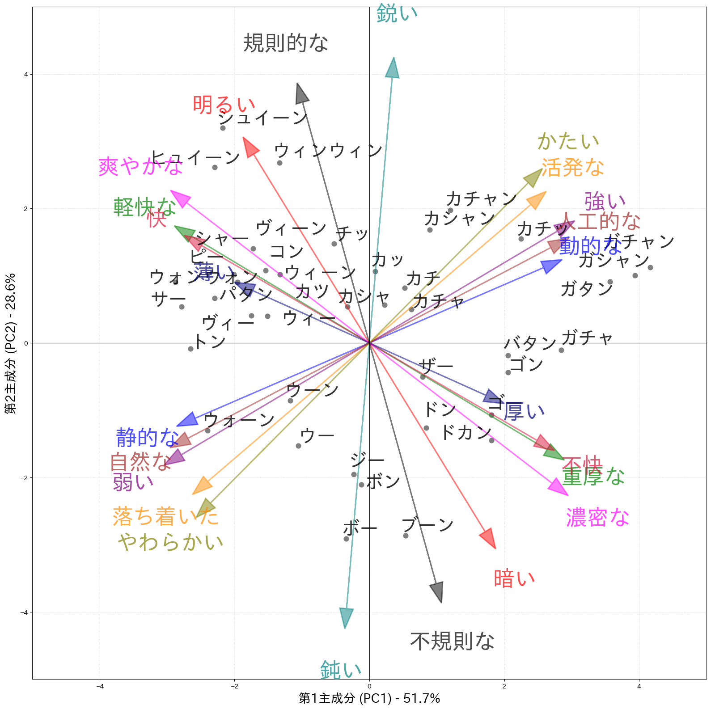

オノマトペマップで可視化するPSD駆動音の高級感
235種類の音源×111名の主観評価を、オノマトペ（擬音語）からPCAで2次元に配置し、 「高級感のある音の方向性」を可視化しました。
オノマトペマップ

PC1は「力強さ・重厚さ ↔ 心地よさ・自然さ」、PC2は「鋭さ・規則性 ↔ 鈍さ・不規則性」の軸として解釈。
235種類の音源×111名の主観評価を、オノマトペ（擬音語）からPCAで2次元に配置し、 「高級感のある音の方向性」を可視化しました。